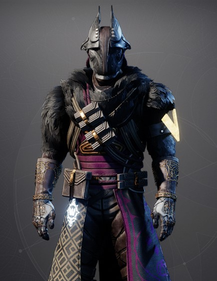

Shadow-1 is a grim reaper for a different universe. Looking for a team to call his own, he wandered from grave site to grave site to look for anyone. Claiming souls along the way. His weaknesses are Believing anyone too quickly and trusting too much.